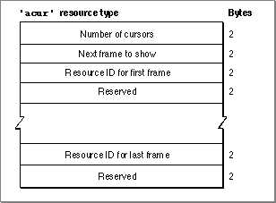

The Animated Cursor Resource
You can use an animated cursor resource to define a set of frames for an animated cursor to display in your application. An animated cursor resource is a resource of type'acur'.If you pass
NILtoInitCursorCtl(described on page 8-20), it automatically loads the'acur'resource that has an ID of 0 in your application's resource file. If you wish to use multiple'acur'resources, you must give them resources IDs greater than 128, and you must use the Resource Manager functionGetResourceto obtain handles to them. You must then coerce their handles to typeacurHandle, which you pass toInitCursorCtl. You use theSpinCursororRotateCursorprocedure to animate the cursors stored in an'acur'resource.This section describes the structure of this resource after it has been compiled by the Rez resource compiler, available from APDA. However, you typically use a high-level tool such as the ResEdit application to create
'acur'resources. You can then use the DeRez decompiler to convert your'acur'resources into Rez input when necessary.The compiled output format for an
'acur'resource is illustrated in Figure 8-10.Figure 8-10 Format of a compiled animated cursor (
'acur') resource
The compiled version of an'acur'resource contains the following elements: